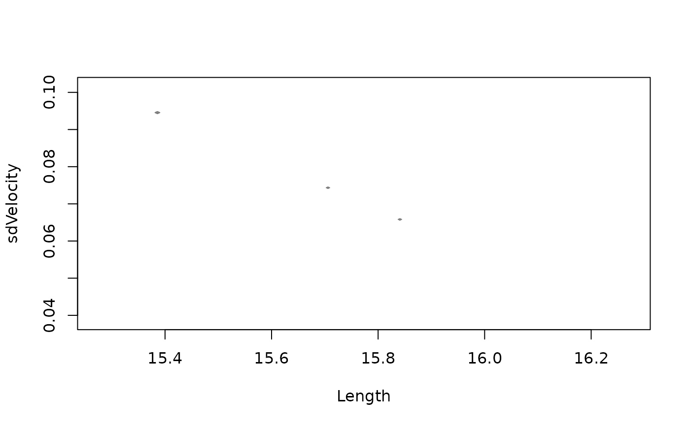
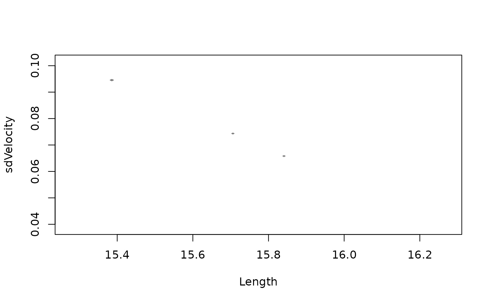

cluster_track() clusters trajectories based on various movement and velocity parameters calculated for each track.
Arguments
- data
A
trackR object, which is a list consisting of two elements:Trajectories: A list of interpolated trajectories, where each trajectory is a series of midpoints between consecutive footprints.Footprints: A list of data frames containing footprint coordinates, metadata (e.g., image reference, ID), and a marker indicating whether the footprint is actual or inferred.
- veltrack
A
track velocityR object consisting of a list of lists, where each sublist contains the computed parameters for a corresponding track.- variables
A character vector specifying the movement parameters to be used in the clustering analysis. Valid parameter names include:
"TurnAng","sdTurnAng","Distance","Length","StLength","sdStLength","Sinuosity","Straightness","Velocity","sdVelocity","MaxVelocity","MinVelocity".
Value
A track clustering R object consisting of a list containing the following elements:
matrix: A data frame containing the movement parameters calculated for each track.clust: AnMclustobject containing the results of the model-based clustering analysis. This object provides the optimal (according to BIC) mixture model estimation. The output components are:call: The matched call.data: The input data matrix.modelName: A character string denoting the model at which the optimal BIC occurs.n: The number of observations in the data.d: The dimension of the data.G: The optimal number of mixture components.BIC: All BIC values.loglik: The log-likelihood corresponding to the optimal BIC.df: The number of estimated parameters.bic: BIC value of the selected model.icl: ICL value of the selected model.hypvol: The hypervolume parameter for the noise component if required, otherwise set to NULL.parameters: A list with the following components:pro: A vector whose k\(^{th}\) component is the mixing proportion for the k\(^{th}\) component of the mixture model. If missing, equal proportions are assumed.mean: The mean for each component. If there is more than one component, this is a matrix whose k\(^{th}\) column is the mean of the k\(^{th}\) component of the mixture model.
variance: A list of variance parameters for the model. The components of this list depend on the model specification. See the help file for mclustVariance for details.z: A matrix whose i,k\(^{th}\) entry is the probability that observation i in the test data belongs to the k\(^{th}\) class.classification: The classification corresponding to z, i.e., map(z).uncertainty: The uncertainty associated with the classification.
Details
The cluster_track() function performs a model-based clustering analysis on track parameters using the Mclust() function from the mclust package.
The function first filters out tracks with fewer than four steps, as these tracks may not provide reliable movement data. It then calculates various movement parameters for each remaining track, including turning angles, distances, lengths, sinuosity, straightness, and velocities. Finally, the selected movement parameters are used as input for clustering the tracks.
If only one parameter is selected, the clustering is performed using equal variance ("E") and variable variance ("V") Gaussian models.
If more than one parameter is selected, all Gaussian models available in mclust.options("emModelNames") are considered.
The following movement parameters can be included in the clustering:
"TurnAng": Turning angles for the track, measured in degrees. This measures how much the direction of movement changes at each step."sdTurnAng": The standard deviation of the turning angles, indicating how variable the turning angles are across the track."Distance": The total distance covered by the track, calculated as the sum of the straight-line distances between consecutive points (in meters)."Length": The overall length of the track, a straight-line distance between the starting and ending points (in meters)."StLength": Step lengths for each step of the track, representing how far the object moved between two consecutive points (in meters)."sdStLength": The standard deviation of the step lengths, showing how consistent the steps are in length."Sinuosity": A measure of the track's winding nature, calculated as the ratio of the actual track length to the straight-line distance (dimensionless)."Straightness": The straightness of the track, calculated as the straight-line distance divided by the total path length (dimensionless)."Velocity": The average velocity of the track, calculated as the total distance divided by the time elapsed between the first and last footprint (in meters per second)."sdVelocity": The standard deviation of the velocity, indicating how much the velocity fluctuates throughout the track."MaxVelocity": The maximum velocity achieved during the track, identifying the fastest point (in meters per second)."MinVelocity": The minimum velocity during the track, identifying the slowest point (in meters per second).
The cluster_track() function has biological relevance in identifying groups of tracks with similar movement parameters,
providing insights into ecological and behavioral patterns. By clustering tracks based on characteristics such as sinuosity,
velocity, and turning angles, it allows detecting movement patterns associated with specific behaviors. This can help identify tracks
potentially made by individuals moving together, which is useful for investigating hypotheses on gregarious behavior, predation
strategies, or coordinated movement. Additionally, clustering serves as a preliminary step before similarity tests and
simulations, refining track selection and improving hypothesis testing in movement ecology studies.
References
Alexander, R. M. (1976). Estimates of speeds of dinosaurs. Nature, 261(5556), 129-130.
Ruiz, J., & Torices, A. (2013). Humans running at stadiums and beaches and the accuracy of speed estimations from fossil trackways. Ichnos, 20(1), 31-35.
Scrucca L., Fop M., Murphy T. B., & Raftery A. E. (2016) mclust 5: clustering, classification and density estimation using Gaussian finite mixture models. The R Journal, 8(1), 289-317.
Author
Humberto G. Ferrón
humberto.ferron@uv.es
Macroevolution and Functional Morphology Research Group (www.macrofun.es)
Cavanilles Institute of Biodiversity and Evolutionary Biology
Calle Catedrático José Beltrán Martínez, nº 2
46980 Paterna - Valencia - Spain
Phone: +34 (9635) 44477
Examples
# Example 1: Cluster MountTom tracks using TurnAng and Velocity
H_mounttom <- c(
1.380, 1.404, 1.320, 1.736, 1.364, 1.432, 1.508, 1.768, 1.600,
1.848, 1.532, 1.532, 0.760, 1.532, 1.688, 1.620, 0.636, 1.784,
1.676, 1.872, 1.648, 1.760, 1.612
) # Hip heights for MountTom tracks
veltrack_MountTom <- velocity_track(MountTom, H = H_mounttom)
result1 <- cluster_track(MountTom, veltrack_MountTom,
variables = c("TurnAng", "Velocity")
)
#> Warning: 12 tracks were discarded for having fewer than 4 footprints. Discarded track indices: 5, 6, 10, 11, 12, 14, 17, 19, 20, 21, 22, 23
result1$clust$classification
#> Track 1 Track 2 Track 3 Track 4 Track 7 Track 8 Track 9 Track 13
#> 1 7 3 7 4 2 5 6
#> Track 15 Track 16 Track 18
#> 1 4 1
# Example 2: Cluster MountTom tracks using Sinuosity and Step Length
result2 <- cluster_track(MountTom, veltrack_MountTom,
variables = c("Sinuosity", "StLength")
)
#> Warning: 12 tracks were discarded for having fewer than 4 footprints. Discarded track indices: 5, 6, 10, 11, 12, 14, 17, 19, 20, 21, 22, 23
plot(result2$clust)

 # Example 3: Cluster MountTom tracks using Maximum and Minimum Velocity
result3 <- cluster_track(MountTom, veltrack_MountTom,
variables = c("MaxVelocity", "MinVelocity")
)
#> Warning: 12 tracks were discarded for having fewer than 4 footprints. Discarded track indices: 5, 6, 10, 11, 12, 14, 17, 19, 20, 21, 22, 23
result3$clust$classification
#> Track 1 Track 2 Track 3 Track 4 Track 7 Track 8 Track 9 Track 13
#> 1 2 3 4 5 6 7 8
#> Track 15 Track 16 Track 18
#> 9 10 6
# Example 4: Cluster MountTom tracks using Straightness
result4 <- cluster_track(MountTom, veltrack_MountTom, variables = "Straightness")
#> Warning: 12 tracks were discarded for having fewer than 4 footprints. Discarded track indices: 5, 6, 10, 11, 12, 14, 17, 19, 20, 21, 22, 23
result4$clust$classification
#> Track 1 Track 2 Track 3 Track 4 Track 7 Track 8 Track 9 Track 13
#> 2 2 2 2 1 2 2 1
#> Track 15 Track 16 Track 18
#> 2 2 2
# Example 5: Cluster PaluxyRiver tracks using Distance and Straightness
H_paluxyriver <- c(3.472, 2.200) # Hip heights for PaluxyRiver tracks
Method_paluxyriver <- c("A", "B") # Different methods for different tracks
veltrack_PaluxyRiver <- velocity_track(PaluxyRiver,
H = H_paluxyriver,
method = Method_paluxyriver
)
result5 <- cluster_track(PaluxyRiver, veltrack_PaluxyRiver,
variables = c("Distance", "Straightness")
)
result5$matrix
#> TurnAng sdTurnAng Distance Length StLength sdStLength Sinuosity
#> Track 1 85.16786 8.716076 16.09043 16.27110 0.5811108 0.05855971 0.07738533
#> Track 2 82.86999 7.941837 15.13227 15.27567 0.6641595 0.08686601 0.14662812
#> Straightness Velocity sdVelocity MaxVelocity MinVelocity
#> Track 1 0.9888963 0.2357754 0.03865919 0.3030204 0.1496251
#> Track 2 0.9906128 0.4559611 0.10150110 0.7056220 0.3356635
result5$clust$classification
#> [1] 1 1
# Example 6: Cluster PaluxyRiver tracks using Length and SD of Velocity
result6 <- cluster_track(PaluxyRiver, veltrack_PaluxyRiver,
variables = c("Length", "sdVelocity")
)
plot(result6$clust)
# Example 3: Cluster MountTom tracks using Maximum and Minimum Velocity
result3 <- cluster_track(MountTom, veltrack_MountTom,
variables = c("MaxVelocity", "MinVelocity")
)
#> Warning: 12 tracks were discarded for having fewer than 4 footprints. Discarded track indices: 5, 6, 10, 11, 12, 14, 17, 19, 20, 21, 22, 23
result3$clust$classification
#> Track 1 Track 2 Track 3 Track 4 Track 7 Track 8 Track 9 Track 13
#> 1 2 3 4 5 6 7 8
#> Track 15 Track 16 Track 18
#> 9 10 6
# Example 4: Cluster MountTom tracks using Straightness
result4 <- cluster_track(MountTom, veltrack_MountTom, variables = "Straightness")
#> Warning: 12 tracks were discarded for having fewer than 4 footprints. Discarded track indices: 5, 6, 10, 11, 12, 14, 17, 19, 20, 21, 22, 23
result4$clust$classification
#> Track 1 Track 2 Track 3 Track 4 Track 7 Track 8 Track 9 Track 13
#> 2 2 2 2 1 2 2 1
#> Track 15 Track 16 Track 18
#> 2 2 2
# Example 5: Cluster PaluxyRiver tracks using Distance and Straightness
H_paluxyriver <- c(3.472, 2.200) # Hip heights for PaluxyRiver tracks
Method_paluxyriver <- c("A", "B") # Different methods for different tracks
veltrack_PaluxyRiver <- velocity_track(PaluxyRiver,
H = H_paluxyriver,
method = Method_paluxyriver
)
result5 <- cluster_track(PaluxyRiver, veltrack_PaluxyRiver,
variables = c("Distance", "Straightness")
)
result5$matrix
#> TurnAng sdTurnAng Distance Length StLength sdStLength Sinuosity
#> Track 1 85.16786 8.716076 16.09043 16.27110 0.5811108 0.05855971 0.07738533
#> Track 2 82.86999 7.941837 15.13227 15.27567 0.6641595 0.08686601 0.14662812
#> Straightness Velocity sdVelocity MaxVelocity MinVelocity
#> Track 1 0.9888963 0.2357754 0.03865919 0.3030204 0.1496251
#> Track 2 0.9906128 0.4559611 0.10150110 0.7056220 0.3356635
result5$clust$classification
#> [1] 1 1
# Example 6: Cluster PaluxyRiver tracks using Length and SD of Velocity
result6 <- cluster_track(PaluxyRiver, veltrack_PaluxyRiver,
variables = c("Length", "sdVelocity")
)
plot(result6$clust)
 
# Example 7: Cluster PaluxyRiver tracks using TurnAng and SD of TurnAng
result7 <- cluster_track(PaluxyRiver, veltrack_PaluxyRiver,
variables = c("TurnAng", "sdTurnAng")
)
result7$clust$classification
#> [1] 1 1
# Example 8: Cluster PaluxyRiver tracks using Sinuosity
result8 <- cluster_track(PaluxyRiver, veltrack_PaluxyRiver,
variables = c("Sinuosity")
)
result8$clust$classification
#> [1] 1 1

# Example 7: Cluster PaluxyRiver tracks using TurnAng and SD of TurnAng
result7 <- cluster_track(PaluxyRiver, veltrack_PaluxyRiver,
variables = c("TurnAng", "sdTurnAng")
)
result7$clust$classification
#> [1] 1 1
# Example 8: Cluster PaluxyRiver tracks using Sinuosity
result8 <- cluster_track(PaluxyRiver, veltrack_PaluxyRiver,
variables = c("Sinuosity")
)
result8$clust$classification
#> [1] 1 1